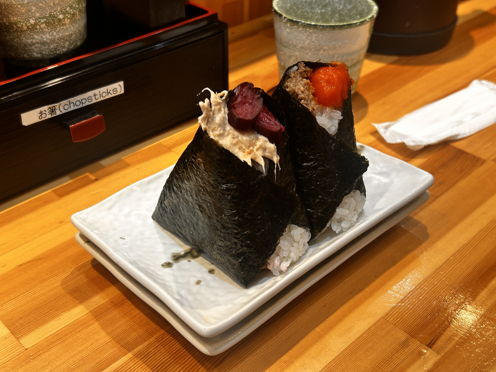

SCHOOL + MAKING A FRIEND
2026.04.08
Hello, MAYA’S MIND™
This is my 2nd entry of my blog. I’m really enjoying this so far. Are you? Tell me what I should feel in the comment section below! JK, there is no comment section so just email me. ☺︎
SCHOOL!
Anyway, yesterday was such a crazy time. First, I took the train to my school in Dotonbori which took only 20 minutes. When I got to the classroom, they asked me where I was from and couldn’t find my student ID card among the other cards, so for a while I had to walk all around the building with this lady only to find that it was just hidden underneath some other card. The Japanese aren’t always perfect. Though, it was nice to walk with her since we were conversing about food in Japanese. I was shocking myself with how much I actually knew.
After attaining my student ID card, I went into the classroom and I noticed a lot of different aged people from different places. There were people as young as 19 and as old as 70. There were about thirty people. I sat near the front and took off my mask and waited.
Two minutes later, a small Asian woman came into the class and asked me if she could sit next to me. The tables sat 3 people so she sat in the middle. I struck up conversation immediately when I noted that she had some sort of English accent. I asked “are you from Australia?”
“Yes! I’m from Mel-bun (Melbourn for anyone not Australian). How about you?” she asked. She had a white flowy dress on and beautiful nails with a white and pink gradient topped with cherry blossoms.
“Chicago,” I responded. I always say I’m from Chicago for simplicity. I doubt I’ll encounter anyone who bears interest in the rich culture of Oswego, Illinois, so there’s no point in describing it’s location. “What’s your name?” was my next inquiry for this humble acquaintance.
“New” and she pointed down to her card that said ‘Neu.’ I noticed her name was Vietnamese so I asked “are you Vietnamese?” to confirm.
She said “yes.” Another point for Maya Alba in the ‘guess what type of Asian this person is’ game.
“Oh cool! I went there last year. It was beautiful.” She nodded. BTW, we were the only one’s talking in the room, so we were sort of whispering.
The class began and it was just an orientation so they just described (in English) what various apps we’ll need, submitting our passport information, signing unlabeled contracts we couldn’t read, buying the sushi package for $100/month, buying the bento bundle for $199/month, buying the sumo special for $1,299/month (it was on sale so I just had to strike).
After class, I talked to her a while alongside another Australian guy from Melbourne. He thought I was also Australian because our passports were both blue and I asked him if we could compare passports. From what I’ve learned, Australian passports have a kangaroo and an emu standing next to eachother with a compass between them. Americans have an hardcore eagle weilding arrows in one claw and a branch in the other. Canadians have a huge leaf.
Me and Neu walked out of the building. Then I was like “ok Neu. I am hungry.” I wasn’t really hungry TBH. I was just wanting to walk back ASAP because I was so tired. I should have just said I was tired.
To my surprise, she asked “oh should we go get food?”
I was like ‘what?’ inside because I’ve never been invited to eat food so suddenly. I accepted her offer because I appreciated the opportunity for a new experience.
ONIGIRI W/ NEW AUSTRALIAN FRIEND!
She invited me to this onigiri place that was a two minute walk. She was describing the taste of this food with such detail. I’s always interesting listening to people who care a lot about a particular food because they speak about it like an art collector or something.
Anyway, when we got there, she told me it was cash only. I didn’t have cash.
She said “it’s fine. I’ll pay and you can pay me back some other way.” OMG! She was so kind.
Throughout all of this, it was sort of awkward for me since if you are my family, you know that I am not a person who has a predilection towards making friends. I’ve only recently come to terms with the fact that I have no real desire to make friends. Reflecting upon my life, why I wanted to make friends has always sprouted from the following reasons:
- to make me seem more likable/approachable to others
- so my family doesn’t worry about me being a loner
- so my teachers don’t worry about me being a loner
- so I’m not chosen last in group/partner activities
Though, I’ve met some people who I genuinely want to be in their presence. I guess that’s a good reason to be friends with someone.
Anywho, we ate and it was sort of awkward. A lot of silence, which isn’t bad, just uncomfortable. I think some people believe I’m an extroverted kind of person. Sometimes I am, but I’m not predisposed to it. I enjoy writing, reading, walking while listening to Chicago jazz, pretending to be better than everyone else. It’s not in my nature to do social activities.
The food was really good and I really enjoyed eating it with the soup. Here is a pic and a video:

After she paid for me (still having adults pay for me. Even a random person in a different country), we said our goodbyes and promised that we’ll go to eat dessert somewhere some other time. I walked back because I am on my grindset mindset.
Got back, ate some red bean sweet bun with milk and slept like a baby. zzzzzzzzz…